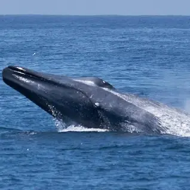
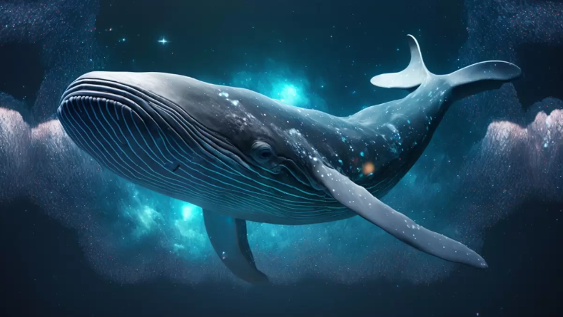
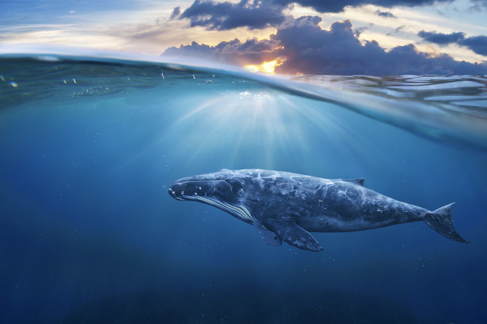
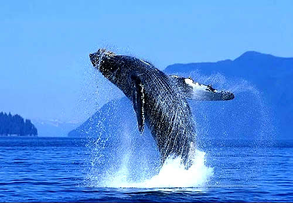
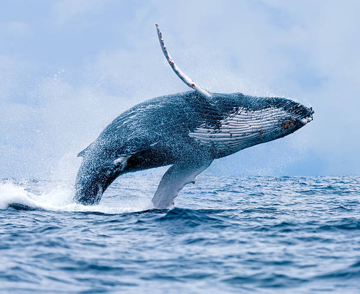

| Yazmin | Farfan | Agapito |
|---|---|---|
| Nombre | descripcion | Imagen |
| ballena azul | Se estima que la ballena azul, el animal más grande del mundo, come más de 16 toneladas de plancton al día. |  |
| Ballena jorobada | La ballena jorobada, también llamada ballena yubarta, es una especie de cetáceo misticeto de la familia Balaenopteridae. |  |
| Ballena Franca | Eubalaena es un género de cetáceos misticetos de la familia Balaenidae, conocidos comúnmente como ballenas francas debido a que nadan lentamente y flotan después de muertas |  |
| Ballena gris | La ballena gris es una especie de cetáceo misticeto de la familia Eschrichtiidae de tamaño medio que en la actualidad sólo habita la zona norte del océano Pacífico y zona norte del Océano Atlántico. |  |
| Ballena barbada | Los misticetos (Mysticeti), conocidos comúnmente como ballenas barbadas, forman un parvorden del infraorden Cetacea (ballenas, delfines y marsopas). |  |